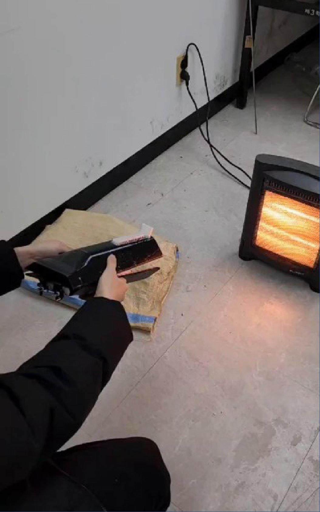
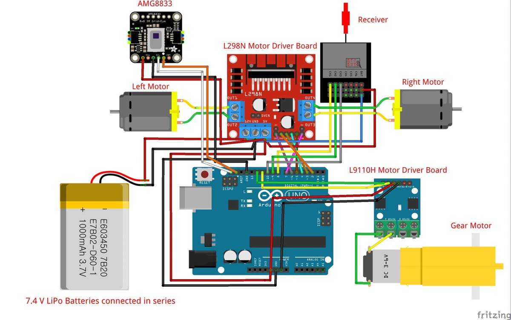
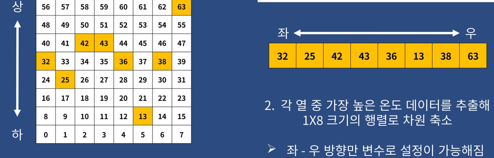

한눈에 보기
- 비전문가가 바로 쓸 수 있도록, 물에 던지면 열원을 찾아 익수자에게 스스로 다가가는 저비용 구명보트와 발사장치를 만드는 것이 목표였습니다.
- 3인 팀에서 저는 차동 제어(좌우 DC 모터의 출력을 달리해 방향을 트는 제어), 아두이노(센서와 모터를 제어하는 보드) 회로 구성, 설계보고서 문서화를 맡았습니다. 두 번째 학기에는 PM(프로젝트 진행 관리)도 맡았습니다.
- 졸업 프로젝트로, 창의적종합설계와 심화종합설계 두 학기에 걸쳐 진행했습니다.
무엇을 만들었나
① 열원 쪽으로 스스로 방향을 튼다
팀은 열화상 센서(8×8 격자로 온도를 재는 센서)가 읽은 값에서 가장 뜨거운 쪽이 왼쪽인지 오른쪽인지 찾도록 처리했습니다.
저는 이 방향에 맞춰 좌우 모터의 출력을 다르게 줘, 보트가 열원 쪽으로 머리를 돌리며 나아가도록 했습니다.

② 조종기로 직접 몰 수 있다
저는 무선 조종기(RC)의 신호로 좌우 모터를 움직여, 사람이 보트를 직접 몰 수 있는 수동 조종 부분을 맡았습니다.
조종기 신호가 하나라도 들어오면 사람이 모는 수동 조종으로 움직이고, 신호가 없으면 스스로 열원을 찾는 자율 추적으로 넘어갑니다.

③ 발사장치로 물에 던져 넣는다
팀은 사람이 들고 방아쇠로 쏘는 발사장치를 만들어, 보트를 익수자 근처 물 위로 날려 보내도록 했습니다.
두 번째 학기에는 자동 팽창 밸브를 넣어, 보트가 물에 떨어지면 구명튜브가 펼쳐지도록 바꿨습니다.
진행 과정
상용 수난 구조장비는 비싸고 조작 숙련이 필요해 비전문가가 바로 쓰기 어렵다는 문제에서 출발했습니다.
첫 학기에는 부품별로 따로 짠 열화상 센서·RC(무선 조종)·모터 코드를 아두이노 하나로 합치다 막혀, 팀은 정기 회의 외에 회의를 하나 더 잡았습니다.
모터 제어를 맡은 저는 기존 RC·모터 코드의 동작부터 다시 점검했습니다. 팀은 센서 신호를 시리얼 통신(보드의 값을 PC 화면으로 받아 보는 통신)으로 먼저 확인한 뒤 모터 코드와 합쳐, 바로 앞의 열원을 찾는 것까지 확인했습니다.
아두이노와 모터를 잇는 회로 구성 역시 제가 맡아, 보드와 모터 드라이버가 좁은 선체 안에 들어가도록 꾸렸습니다.

첫 학기 시제품에는 이런 한계가 있었습니다.
- 전원 스위치가 없어 상시 전원으로 빨리 방전됐습니다.
- 저온에서도 방전됐습니다.
- 구명튜브를 수동으로 부풀리던 기어모터는 견딜 수 있는 하중(허용하중)이 한계였습니다.
팀은 기말 발표에서 이 한계를 개선안(스위치 추가·방수, 고용량 배터리, 배터리 단열)으로 정리했습니다. 두 번째 학기에는 On/Off 스위치와 배터리 보온 구조를 넣고, 구명튜브 전개를 자동 팽창 밸브로 바꿨습니다.
팀은 제작비 약 51만 원으로 시제품을 완성해 수상 구동·비거리·자율주행 시험 영상을 남겼고, 교내 캡스톤디자인 아이디어 최우수상과 졸업작품 경진대회 장려상을 받았습니다.
다만 원거리 탐지 결과나 개선 전후의 전압·작동 시간은 기록으로 남기지 못했습니다.
팀에서 일한 방식
역할은 모터 제어·센서 제어·모델링으로 나눴습니다.
- 팀원들이 이끈 일: 선체 항력(물의 저항) 해석, 발사장치, 방수 하우징, 구명튜브 팽창 기구
- 함께 한 일(공동작업): 코드 통합, 선체 형상 설계
그 안에서 저는 이렇게 일했습니다.
- 3D 모델에서 모터·센서를 고정하는 홀더의 배치와 부품끼리 부딪히는지(간섭)를 확인하며, 회로와 제어를 선체 형상에 맞췄습니다.
- 회의록 작성을 맡아 담당과 다음 일정을 기록했습니다.
- 설계보고서 문서화를 맡았습니다.
배운 점
아두이노로 센서를 읽고 PWM(펄스 폭으로 모터 속도를 조절하는 방식)으로 모터를 돌리는 일을 이 프로젝트에서 직접 다뤘습니다.
한 학기 결과의 한계를 발표에서 개선안으로 정리해 다음 학기에 반영하는 흐름을 경험했습니다. 개선을 말하려면 전후를 비교할 값부터 측정해 두어야 한다는 점을 배울 수 있었습니다.
기술 상세
열 추적·모터 제어 흐름 펼쳐 보기
열화상 센서의 8×8 온도값을 열별 최댓값 8개로 줄여 가장 뜨거운 열의 위치로 좌우 방향을 정하고, 방향마다 좌우 모터 출력을 다르게 줘 방향을 틉니다. RC 신호가 들어오면 수동 조종으로, 없으면 자율 추적으로 넘어갑니다.

코드 근거
Grad_proj — 프로젝트 기록과 아두이노 코드(README가 코드 구성을 설명합니다)